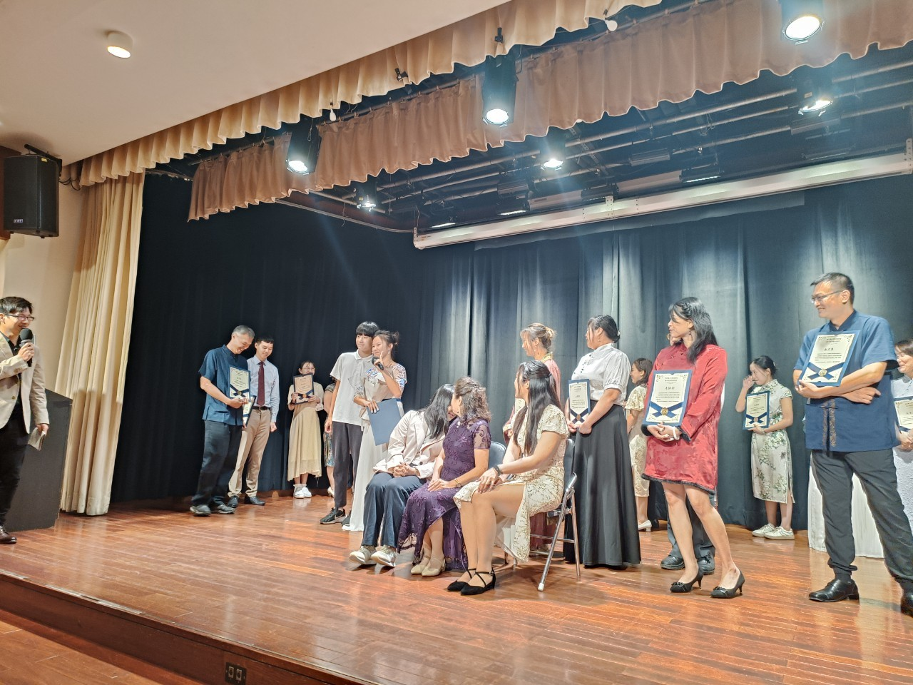
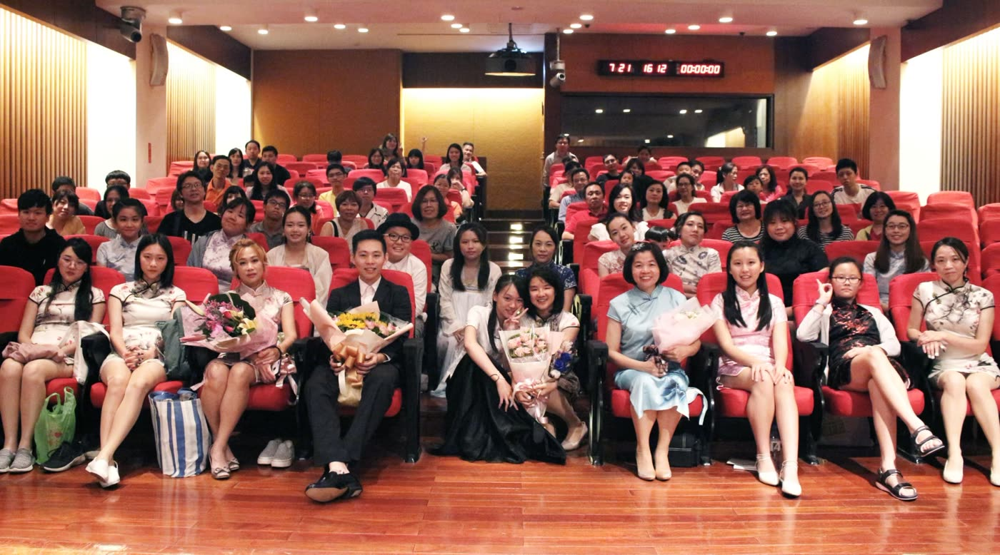
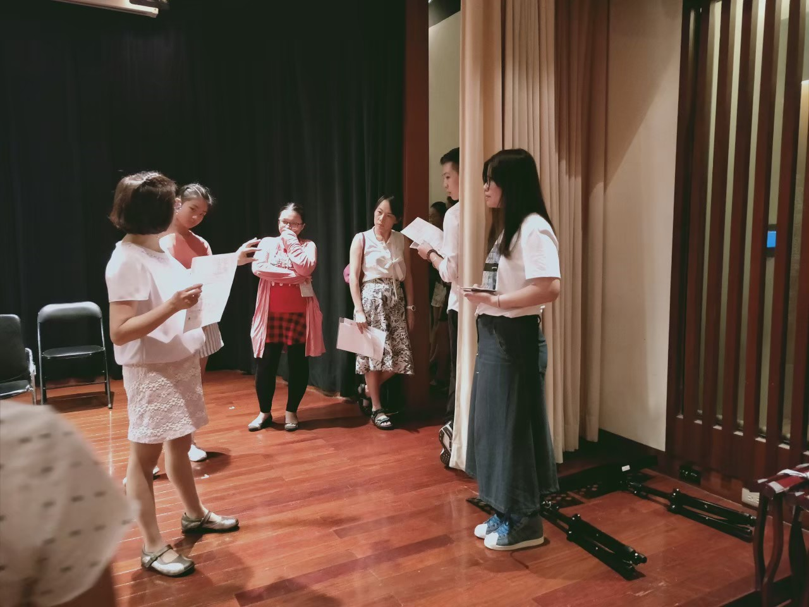

關鍵要點
- 成果發表會是對自己學習旅程的肯定，而非炫耀技巧
- 舞台經驗為學習過程提供重要的成長里程碑
- 透過演出，學習者能直觀感受自己的進步與成長
- 發表會培養的不僅是音樂技巧，還有自信與專注力
- 在舞台上的演奏經驗能讓音樂更深入地融入生活
- 演出是將音樂從個人享受轉變為分享與連結的機會
- 成果發表會對成人學習者尤其具有特殊價值
- 不需完美無瑕，只需願意給自己一個機會
成果發表會的意義
許多學員第一次聽到「成果發表會」這四個字時，總是會露出一點緊張的笑容。
「老師，我只是想放鬆一下，不用上台吧？」
我們懂。大多數成年人學古箏，並不是為了成為演奏家，而是希望在忙碌的生活裡，找到一個能呼吸的角落。但奇妙的是——幾乎每一位參加過發表會的學員，在那天之後，都變得不一樣了。

成果發表會不僅僅是一場演出，它是:
- 學習歷程的見證
- 自我挑戰的里程碑
- 將音樂轉化為分享的時刻
- 從「學習者」到「演奏者」身份轉變的契機
發表會的轉變魔力
我們觀察到，參加過成果發表會的學員往往會經歷以下轉變：
- 練習更有目標性與動力
- 對作品理解更深入
- 技巧進步速度明顯加快
- 對自己的音樂能力更有信心
- 更願意在日常生活中分享音樂
那一天的你，會發現「我真的做到了」
演奏結束後，她深深鞠了一躬，笑得有點哽咽。那笑容裡的意思，誰都懂——她在告訴自己：「我做到了。」
我們舉辦成果發表會，不是為了讓誰看你多厲害，而是希望讓你親眼看見，自己這段時間到底走了多遠。那份成就感，不是別人給的，而是你親手彈出來的。

學古箏的路上，舞台是一面鏡子
成人學習古箏的過程裡，最難的從來不是技巧，而是時間與心境。我們常常為了家庭與工作奔波，把「自己」放在最後。古箏課對很多人來說，是一段私密又珍貴的時間。
而成果發表會，就像一面鏡子——讓你回頭看看，那些練習的夜晚、那些指尖的疼痛、那些曾經懷疑自己能不能做到的時刻。
面對挑戰的勇氣
站上舞台需要勇氣，尤其是對成人學習者來說。這種勇氣不僅用於音樂表演，也會慢慢延伸到生活中的其他挑戰。
專注的力量
演出時刻的全神貫注，是一種難得的「心流」體驗。這種狀態能讓我們暫時忘卻外界干擾，完全沉浸於當下。
接納不完美
每場演出都可能有小失誤，學會接納這些不完美，是音樂給我們的重要課題——就像我們學會接納生活中的起伏一樣。
成長的見證
當你看到曾經覺得困難的段落，如今能夠流暢演繹，這種進步的實際證明是無價的。
當你站上台，音樂會替你回答：「是的，我做到了。」那不是別人的評價，而是一種自我肯定的安靜力量。
成果發表會，不是終點，而是一種「生活的儀式感」
有些人把發表會想成「考試」，但我們更希望你把它當成一場「儀式」。它是你生活的一個節點，一個讓時間有形的紀錄。當你為了一首曲子而練習、修改、重來，你在這過程中學會的不只是樂理與節奏，而是專注與耐心。
超越「完美演出」的目標
發表會的真正價值不在於完美無缺的表演，而在於:
- 為自己設立可見的目標
- 體驗準備過程中的成長
- 建立對音樂更深的連結
- 創造值得回味的美好記憶
- 在生活中加入儀式感與里程碑
這些特質，其實會慢慢滲進你的生活：你開始能更沉得住氣、能更聽見自己心裡的聲音。而當你上台、彈下第一個音，你會明白——原來古箏教的不只是音樂，而是一種生活的姿態。

一場發表會，讓音樂回到生活的核心
在「箏心古箏音樂教室」，我們一直相信——學古箏不是只為了上課，而是為了讓音樂重新進入生活。有些學員邀請家人朋友一起來聽，有些學員帶著孩子來台下，看著媽媽或爸爸在台上彈奏。那一刻，音樂變成了分享、陪伴，也是一種傳遞。
成果發表會的社交與心理益處
- 與其他學習者建立連結，形成支持社群
- 分享音樂帶來的成就感與滿足感
- 家人見證學習成果，增進相互理解
- 突破舒適圈，建立自信與面對挑戰的能力
- 透過表演，重新定義自我形象
學古箏最美的地方，不在於你能彈多難的曲子，而在於當音符流出，你能感受到「這是我的聲音」。成果發表會，就是那個讓聲音被聽見、被珍惜的時刻。
給每一位仍在猶豫的你
你不必完美，不必毫無錯誤，也不必有舞台經驗。你只需要願意。
願意給自己一段時間，願意讓音樂替你說話。當你在舞台上撥下最後一根弦，掌聲響起，你會發現，那不是為了表演的鼓勵，而是為了你在這段旅程裡，終於對自己說出的那句話——
克服演出緊張的實用建議
- 充分準備：熟悉到形成肌肉記憶是最好的信心來源
- 專注呼吸：演出前深呼吸，穩定情緒
- 思考分享：將心態從「被評判」轉為「在分享」
- 接納小失誤：預先接受可能的小失誤，減輕心理負擔
- 享受過程：專注於音樂本身，而非觀眾反應
結語
成果發表會對每位學習古箏的人來說，都是一段特別的旅程。它不僅是展示技巧的舞台，更是自我成長的見證。無論你是害怕上台的初學者，還是希望挑戰自我的進階學習者，每一次的演出都是一次寶貴的經驗。
在箏心，我們深信音樂的力量不僅在於彈奏的技術，更在於它如何豐富我們的生活、連結我們的情感。成果發表會正是這種連結的重要橋樑。
期待在下一次的發表會上，見證您的音樂時刻。
想了解更多關於我們的成果發表會或報名體驗課程？歡迎聯繫我們！